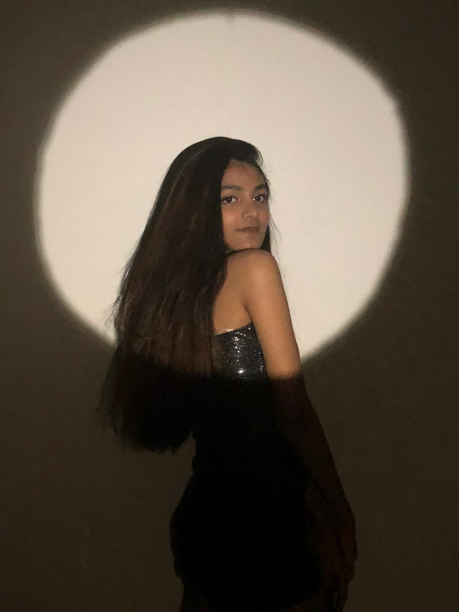

Bio

My name is Dhruvi Dhamecha and I am currently studying 2nd year in Concordia University majoring in Design. I have spent most of my childhood in Dubai but I was born in India. I have always been fascinated by the variety of designs used in Dubai from magazines to structures. Even though this is my first time learning the basics, my interest lies more in Web Design and UX Design. The amount of crazy things that can be done on the internet is infinite. My goal or aim is to learn the advanced features in Web Design and be able to do good in this field.
Hobbies and Interests
My hobbies include painting, sketching, travelling and listening to music. Travelling is one of my favourites. It makes me feel good and motivated to work for a better future. Knowing about the new people, environment and culture of a place is very interesting.Being able to see many cultures firsthand rather than either reading about or watching them on television is one of my favourite benefits of having travel as a pastime. I don't want to suggest in the slightest that a week in another country teaches you everything there is to know about it, but I do think it increases your awareness and respect of the local culture. Especially visiting historically important places is really fascinating!
Experiences

I have had experience working in graphic design. I m the head of graphic design for a non-profit organization called Monthly Dignity. I also work as Vice President of marketing for South Asian Student Association. Ib both the organizations, I usually make the design the posts, upcoming stories, facebook and instagram page. I make sure its up to the aesthetics set before on the social media page.